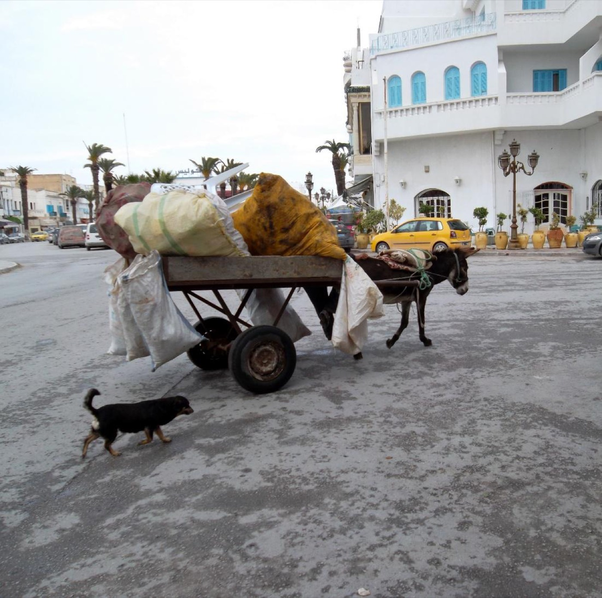
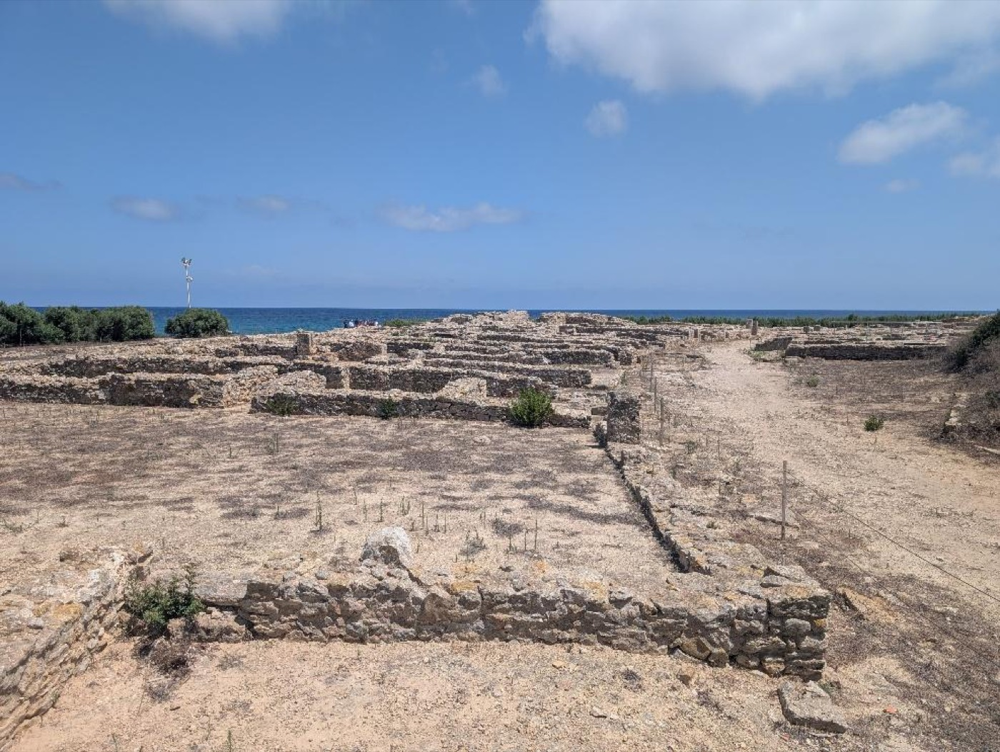
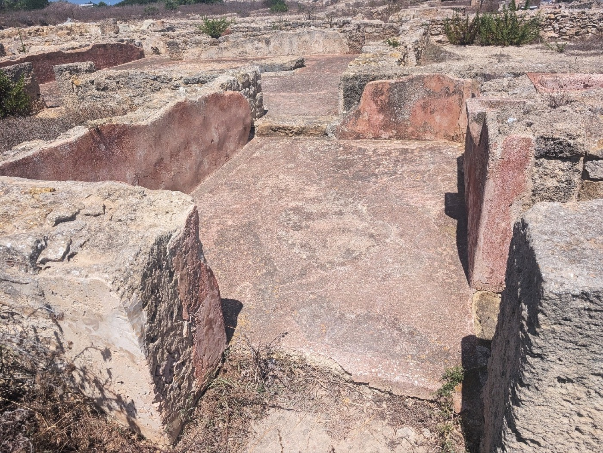
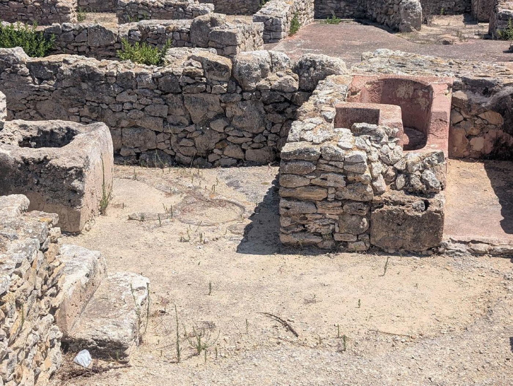
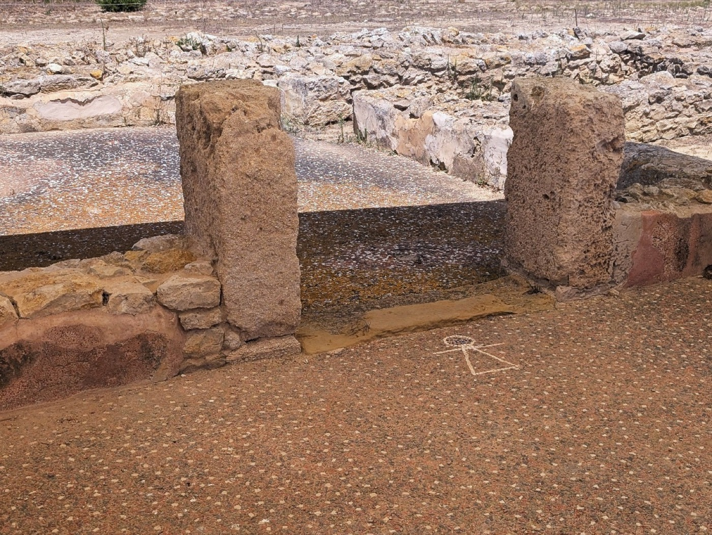
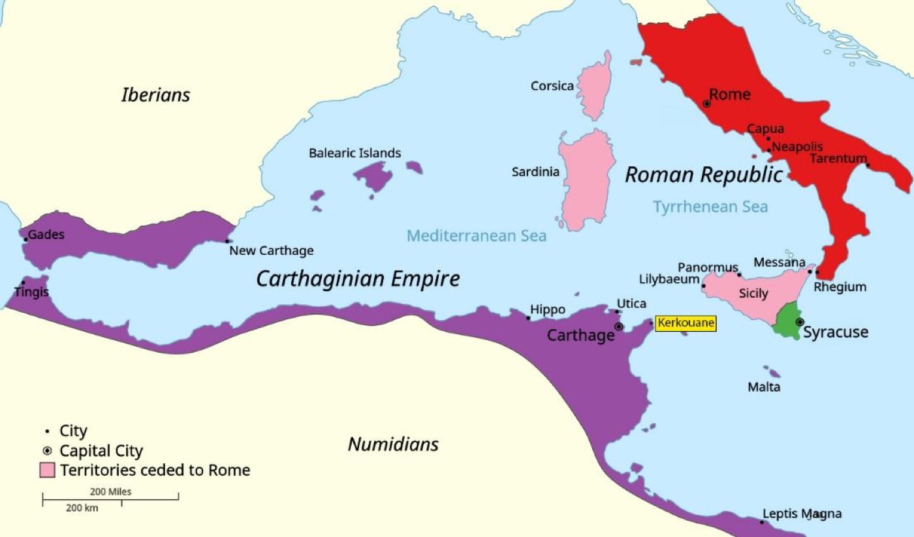

By Laura Harrison · Published 2026-09-12
Scientific Director, TanitXR
A scruffy brown donkey lowered its eyelids as a merchant filled its wooden cart with stacked bins of corn and melons. We saw several more like it as we crawled through chaotic Friday traffic and pressed toward the tip of the Cape Bon peninsula (Figure 1).
Everything started to feel a little more handmade the farther we went. The crisp ten-story apartment buildings and fine houses from Nabeul gave way to hand-plastered two-story shops clustered around dusty passageways. Some were barely wide enough for a car.

Figure 1: Donkey cart in the Cape Bon peninsula. Photo by Verity Cridland, CC BY 2.0, via Wikimedia Commons.
As we approached Kerkouane (ker-KWAHN), olive groves gave way to a rocky coast. A salty breeze carrying rosemary and thyme moved over deep turquoise water that splashed against the rocks. A yellow puppy greeted us, sleepily, from a shady spot near the entrance. Just a few tourists meandered around.
The rhythms of daily life unfolded in front of us as we stepped onto Rue de l’Apotropaion, the main street of this Phoenician trading village, settled around the 6th century BCE by people the Romans later called Punic. The street’s gentle bend followed the contours of the coast (Huemer 2021, Figure 2). Fragments of red-painted plaster clung to the knee-high remnants of rubble masonry (Figure 3). I immediately noticed a certain regularity in the placement and design of doorways along this boulevard; housing blocks (insulae) were all approximately the same size. This was a working village full of merchants, traders, and families who lived here year-round (Current World Archaeology, 2007).

Figure 2: The main street of Kerkouane curving gently to mirror the shape of the rocky promontory on which it sits. Photo: Laura Harrison

Figure 3: Red-painted plaster still clings to the walls and floors of this Kerkouane building, more than 2000 years after the site was abandoned. Ashlar blocks frame the doorway in the foreground. Photo: Laura Harrison
Kerkouane was found by accident. In 1952, Charles Saumagne of the French Department of Antiquities was fishing along the north coast of Cape Bon when he turned and noticed pottery sherds projecting from the low cliff behind him. He recognized them as Punic (Current World Archaeology, 2007). Years of excavation followed, led by Mounir Fantar, who revealed a planned layout and a complex local economy with workshops for pottery and purple dye made from murex shells (Fantar 1987). The town contains ordinary houses interspersed with a few more elaborate residences, several small public spaces, and a fascinating array of bathtubs and drainage infrastructure (Fantar 1987, Figure 4). Houses also contained inner courtyards and small, secluded shrines, and often, a substantial portion of the first floor was devoted to mercantile and retail activities (Huemer 2021).

Figure 4: Kerkouane houses often included terracotta bathtubs and drains, as pictured here. Photo: Laura Harrison
Extra care was taken to mark entrances. They were framed with finely cut rectangular blocks. In a few places, I saw doorjambs carved into them: evidence of wooden doors that vanished long ago. There is a certain intimacy to doorways and entrances – the transitional zone between public and private space. For a moment, I caught myself imagining the farewells and greetings that must have occurred in these places – a merchant leaving home once again to peddle his goods throughout the Mediterranean.
The real reason we were at Kerkouane was to see the temple to Tanit, the chief goddess of Carthage and the Punic western Mediterranean. Tanit’s reach was broad. She was a deity of fertility and motherhood, the dead, and of Carthage itself. Her protection was invoked at doorways, on amulets, and in funerary contexts. A quick walk through the museum at Kerkouane showed that her presence permeated daily life and was found in all types of material culture, from sculptures to stone carvings and small figurines.
We had heard Tanit’s image was still visible in an in situ mosaic, and found it within her dedicated sanctuary, protected under a shady awning (Figure 5). Here, the goddess was depicted in her classic form as a simple triangle topped with a horizontal line and a circle. She was a spare and beautiful figure in stark white against a reddish-brown pavement enlivened with irregular cream-colored tesserae.

Figure 5: A mosaic of the goddess Tanit within a temple complex at Kerkouane. Photo: Laura Harrison
When excavating the space, archaeologists found the Tanit mosaic within a multi-roomed complex that also contained an altar and a courtyard that was littered with ashes and the remains of animal bone, presumably sacrifices. Nearby public bathing facilities may have been used for ritual purification in connection with activities in the main sanctuary (Huemer 2021).
Kerkouane was originally established as a trading post by the Phoenicians, determined sailors and traders who came from Tyre, in what is today Lebanon. The Phoenicians ran an extensive trade network in the ancient Mediterranean, circulating timber, metal, glass, and purple dye from the Lebanese coast to Cyprus, Sicily, Sardinia, North Africa and out past Gibraltar to the Atlantic. Along the way, they established small villages like Kerkouane and major urban centers like Carthage. Rome would call their western descendants Punic. Carthage would eventually come into conflict with the Greeks over Sicily, then with Rome in the Punic Wars.

Figure 6: Territories involved in the First Punic War, with Kerkouane highlighted in yellow. Map by GalaxMaps, CC BY-SA 4.0, via Wikimedia Commons; modified by Laura Harrison.
Kerkouane became embroiled in this conflict in the First Punic War (264-241 BCE), when Roman forces swept the Cape Bon peninsula (Figure 6). The town was destroyed by Regulus in 255 BCE and soon became a ghost town: it was never inhabited again; never reoccupied or overbuilt by a Roman grid, medieval town, or modern resort. That preservation is one of the key reasons Kerkouane was recognized as a UNESCO World Heritage Site in 1985 (UNESCO World Heritage Centre, n.d.).
There were already recognized preservation concerns at Kerkouane in 1985 when it became a World Heritage Site (UNESCO World Heritage Centre, n.d.). At the time, heritage professionals in Tunisia had already built a supporting wall to stabilize the ruins and protect them from erosion.
Seven years later, in 1992, the World Heritage Bureau again noted that the Institut National du Patrimoine (INP) was taking action “to reinforce the cliff which is being eroded by waves” (UNESCO World Heritage Committee, 1992). The most recent UNESCO Periodic Report (State Party of Tunisia, 2021) indicates erosion is still a problem, and that while the integrity and authenticity of the site is intact, marine erosion of the coast still presents a persistent threat.
In this latest report, wind and relative humidity are also listed as affecting the property, causing degradation of materials and monuments. The operating budget is insufficient to cover “essential management needs” (State Party of Tunisia, 2021), including the construction of protective shelters. This is a common problem not just in Tunisia, but in cultural heritage sites around the world.
In all its precarity, Kerkouane faced Storm Harry on January 20, 2026, which brought waves up to 12 meters, storm surge, and the worst rainfall in 70 years. Four people died, and the coastal areas adjacent to the site flooded (Al Jazeera, 2026; Buyukyildirim, 2026; Tunis Afrique Presse, 2026). Heritage officials reported that the storm exposed archaeological remains about a kilometer away, in Demna and Oued El Ksab, and they have begun to take an inventory along the affected coastline. Around 90% of Mediterranean World Heritage Sites are now considered at risk from rising seas. Of 49 sites on low-lying coasts, 42 face coastal erosion and 37 face flooding, with Kerkouane and its necropolis among the three Tunisian sites identified as at risk (Reimann et al., 2018; Gohar, 2018). Tanit, the goddess of protection, silently watches as the realities of erosion and decay come into view, and her own symbol fades further.
The ancient inhabitants of Kerkouane embedded Tanit’s symbol in thresholds, on floors, in doorways, and at the boundary between the inside and outside. The boundary at Kerkouane is now the shoreline, and it has been unstable for many years. TanitXR was founded to preserve cultural heritage in Tunisia and beyond through community-based digital documentation. We hope to one day scan Kerkouane and assist community partners in their efforts to monitor and protect the site. With these records, Tunisian citizens and the wider public would still have a way to learn from and appreciate Kerkouane, even if the site is damaged or one day lost. We look to Tanit for inspiration in this work of sustaining cultural heritage for future generations.
Thousands of years ago, the people of Kerkouane asked Tanit to protect that which was most valuable to them: their homes and their families. Today, that relationship has reversed: it’s our job to protect Tanit’s symbol, message, and legacy.